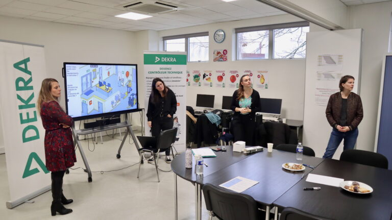
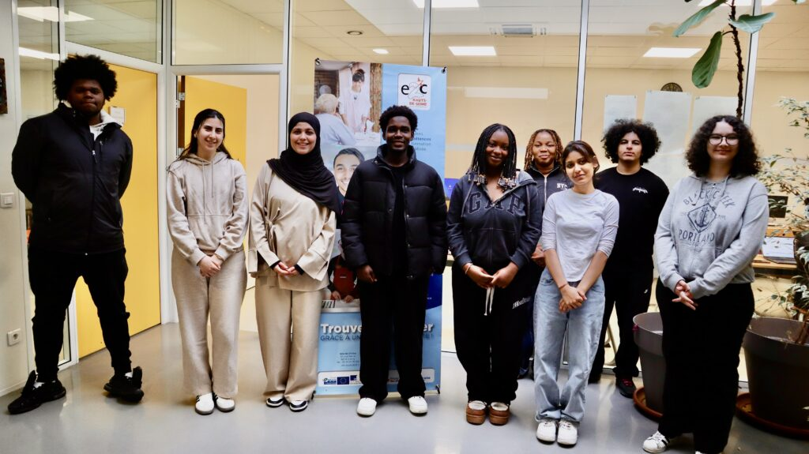
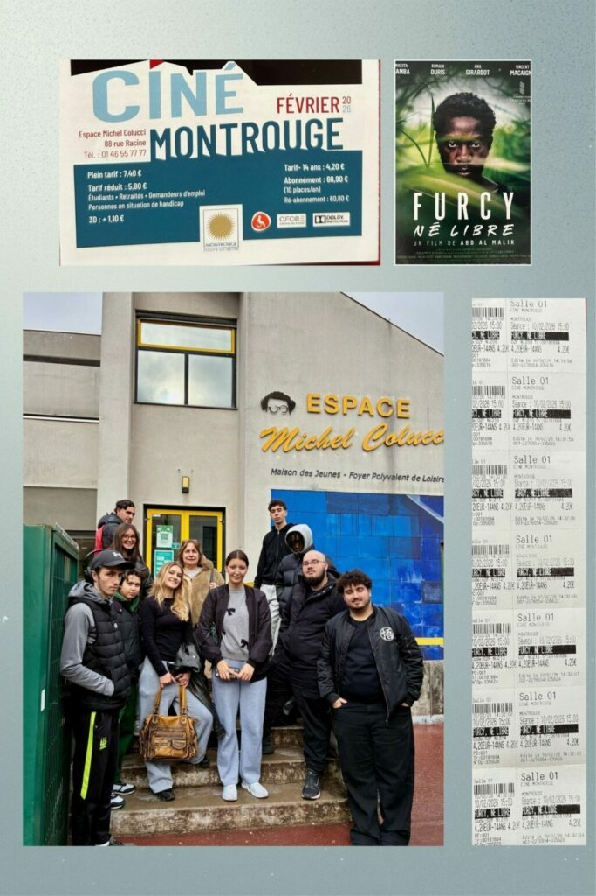

OCTOBRE 2026Workshop pédagogique
Renforcer les liens entre pédagogie et entreprise. Les stagiaires rencontrent les professionnels du secteur.
Restez informé des événements et des nouveaux projets de l'E2C92.

OCTOBRE 2026Renforcer les liens entre pédagogie et entreprise. Les stagiaires rencontrent les professionnels du secteur.

SEPTEMBRE 2026Le groupe s'est constitué pour découvrir les métiers de la pâtisserie, un secteur très porteur.

JUILLET 2026Explorer de nouvelles méthodes de travail pour développer l'autonomie et la créativité de nos jeunes.